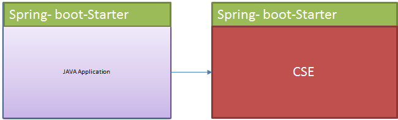
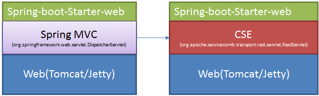

在Spring Boot中使用java chassis
Spring Boot可以让开发者能够更加快速的构建Spring应用。主要提供了如下功能：
-
创建独立可执行的Spring应用。通过将应用程序打包为jar，就可以通过java -jar来执行应用程序。
-
内嵌Tomcat, Jetty等WEB服务器，而不需要开发者打包war。
-
提供starter简化maven依赖关系配置。
将Spring Boot用于微服务开发，可以极大的简化开发者配置和部署。java-chassis提供了完善的的服务治理能力、良好的跨语言特性和高效的异步通信能力，通过使用java chassis，可以快速启用各种满足商业运维需要的功能。
本文将介绍如何在Spring Boot中集成和使用。开发者通常会以如下几种方式使用Spring Boot：
-
JAVA应用方式：引入spring-boot-starter，开发普通JAVA应用，该应用不会启动WEB服务器。
-
Web开发方式：引入spring-boot-starter-web，开发Web应用，该应用会包含一个内嵌的Tomcat或者Jetty服务器，并且使用The Spring Web MVC framework（简称Spring MVC）开发REST接口。
java-chassis 集成 spring boot的方式
在两种情况下，都可以集成java chassis，原理图如下：
- JAVA应用方式

这种集成方式相对简单，相当于直接将java-chassis通过Spring Boot应用拉起，通过java-chassis 提供REST/RPC服务。
- Web开发方式

该集成方式的本质是将Spring MVC的DispatcherServlet替换为java chassis的RestServlet，通过java-chassis提供REST/RPC服务。
两种集成方式的区别
两种开发方式都会启用java chassis的全量功能，JAVA应用方式运行于独立的HTTP服务器（基于vert.x构建）上，性能上存在很大的优势。Web开发方式运行于Tomcat或者其他内置的Web服务器之上，作为一个Servlet接收请求，因此在开发过程中，可以使用Web容器提供的一些功能，比如提供页面服务，使用Filter等。当应用只需要提供REST服务，并且对性能要求很高的场景，建议使用JAVA应用方式。